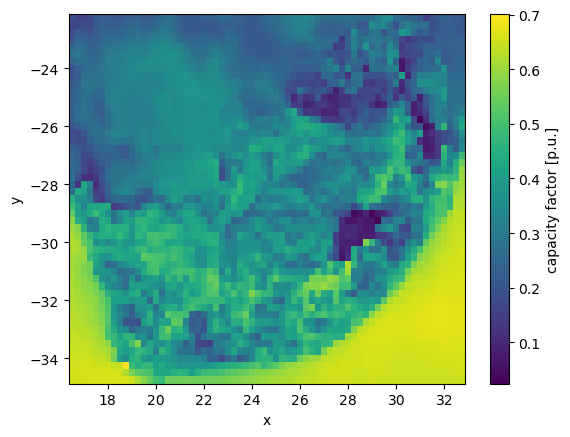

Data used by the model
This section explains in detail how PyPSA-ZA downloads and retrieves the various data types.
Preparing the power grid layout and climatic inputs are two essential aspects of the energy modelling workflow. In addition, PyPSA-ZA utilises several environmental, economic, and technological datasets.
1. Grid topology data
PyPSA-ZA allows the user to select the desired spatial resolution; shape files are presently available for South Africa, the nine provinces of South Africa, the ten supply areas outlined in the Eskom TDP, and the twenty-seven Eskom supply regions. These shape files may be found in data/bundle/supply regions/regions.shp, where regions represents the desired spatial resolution, such as 10-supply.
The grid topology model is constructed using the build_topology rule. When the rule build_topology is executed, the buses and lines are computed and saved as geojson files in the folders resources/buses_{regions}.geojson and resources/lines_{regions}.geojson for each region.
2. Climate data
The climate data processing is provided by the atlite package and GWA.
The build_cutout rule downloads weather data from either ERA5 reanalysis weather dataset or SARAH-2 satellite-based historic weather data. It extracts all the required whether and climate data to generate the time series of renewable potential by build_renewable_profiles rule.
The rule build_renewable_profiles corrects for the wind speed at 100m using GWA data which is provided in data/bundle/ZAF_wind-speed_100m.tif.
{kind=link}
3. General data
There are a number datasets applied in PyPSA-ZA to build a realistic model. Original datasets are stored in the data/bundle folder. Currently we are using the following resources.
Environmental
SAPAD The South African Protected Areas Database (SAPAD)

It is used in the build_natura_raster rule to quantify what are the land regions available for the installation of renewable resources, e.g. renewable assets may not be installed on arable land.
SACAD The South African Conservation Areas Database (SACAD)
It is used in the build_natura_raster rule to quantify what are the land regions available for the installation of renewable resources, e.g. renewable assets may not be installed on arable land
redz A dataset of the Renewable Energy Development Zones (REDZs) containing 8 priority areas for investment of wind and solar PV development available from the Department of Forestry, Fishers and the Environment of the Republic of South Africa.
The dataset is used to restrict renewable energy expansion to the REDZs regions in the rule build_renewable_profiles.
corridors A dataset of REDZs Strategic Transmission Corridors containing 5 priority areas for the investement of new
electricity transmission and distribution infrustructure available from the Department of Forestry Fishers and the Environment
The dataset is used to restrict renewable energy expansion to the strategic transmission corridors regions in the rule build_renewable_profiles.

salandcover A dataset of the South African National Land Cover
Economical
costs.csv spreadsheet in model_file.xlsx file which contains the default costs of the technologies along with their typical lifetime and efficiency values. The dataset is intended to give a starting point for running the model while user specific adjustments may be made.
ZAF15adjv4.tif raster dataset of the population located in data/bundle/South_Africa_100m_Population/ZAF15adjv4.tif
Technological
EIA_hydro_generation_2011_2014.csv contains data on total energy production of existing plants as reported per country by the open US Energy Information Administration EIA platforms. It is used to calibrate the runoff time series obtained from the global reanalysis data.
4. Pre-calculated datasets
There are some datasets which were prepared to ensure smooth run of the model. However, they may (and in some cases) must be replaced by custom ones.
natura.tiff contains geo-spatial data on location of protected and conservation areas and may be used as mask the exclude such areas when calculating the renewable potential by build_renewable_profiles rule. The natura flag in the configuration file allows to switch-on this option while presence of the natura.tiff in the resources folder is needed to run the model.
Currently the pre-build file is calculated for South Africa using the SAPAD and SACAD datasets.
SystemEnergy2009_22.csv is the electricity demand profile provided from the Eskom data portal. This pre-downloaded data on electricity demand is placed in data/bundle/SystemEnergy2009_22.csv.
eskom_pu_profiles.csv is Eskom hourly pu profiles for all wind and solar generators in South Africa. The use_eskom_wind_solar flag in the configuration file allows to switch-on this option. This data is located in data/eskom_pu_profiles.csv
num_lines.xlsx is the number of high voltage transmission lines (i.e 275kV, 400kV and 765kV) between neighbouring regions.
Eskom EAF data.xlsx is daily Energy Availability Factor of Eskom plants. It is the difference between the maximum availability and all unavailabilities (PCLF, UCLF & OCLF) expressed as a percentage. This excludes renewables, IPPs and international imports. This pre-downloaded data is placed in data/Eskom EAF data.xlsx
5. Scenario generation spreadsheet
model_file=”model_file.xlsx”,